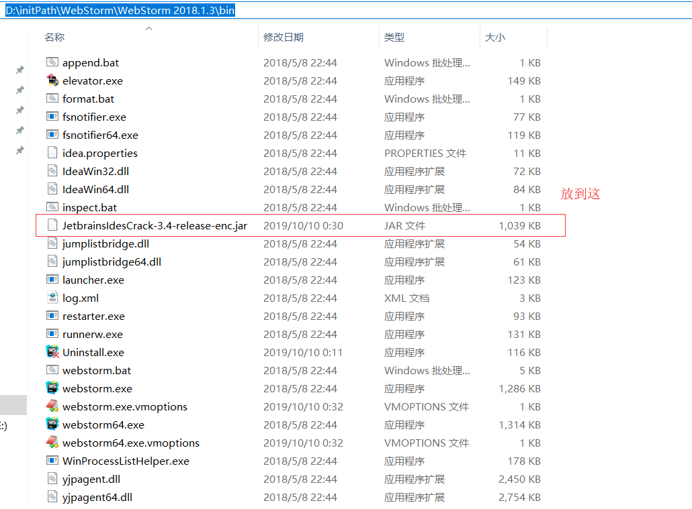
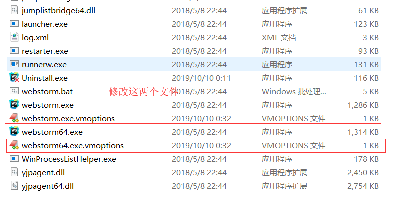
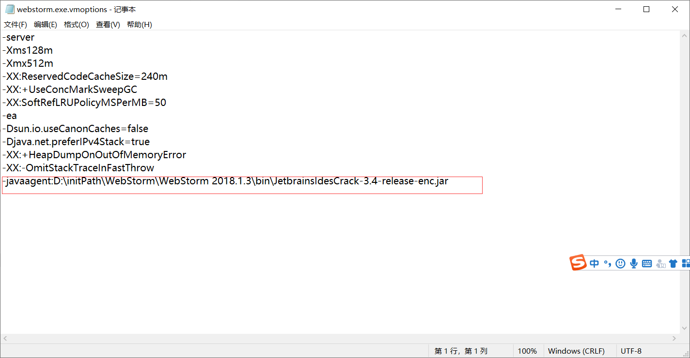
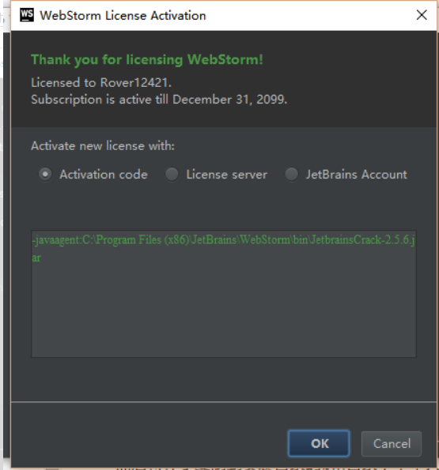

相信使用HBuildX的各位都用过，所以这个webstorm就是用来代替的。
因为使用方式跟idea等软件差不多，如果习惯了idea的操作方式的可以试一试
这是2018版的webstorm安装包,如果想要最新版的安装包可以去官网下载，只不过本破解补丁不能
链接：https://pan.baidu.com/s/1UmKIqGbqqmK6MTJH9tDcnw
提取码：fcgv
下载好，傻瓜式安装就行
说好用的我感觉还是下那种破解包的好用些，其他估计会有些莫名其妙的错误
下面是破解jar包
链接：https://pan.baidu.com/s/1wikeFfdgMlYoSrixbRgCsg
提取码：a0ks
1，把破解jar包放到自己安装的位置

2，修改两个文件
webstorm.ext.vmoptions和webstorm64.exe.vmptions

把这种形式的copy到后面，记住要改路径！
-javaagent:D:\initPath\WebStorm\WebStorm 2018.1.3\bin\JetbrainsIdesCrack-3.4-release-enc.jar

3，两个都改好了就可以登录注册码了，也是把上面的copy上去就行

OK，如果变绿色就代表成功，